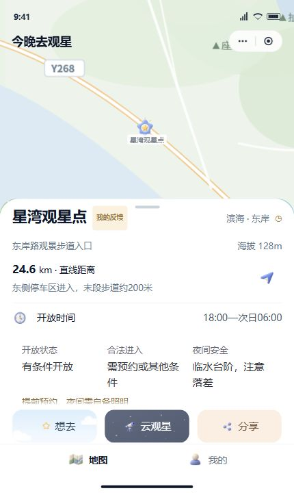
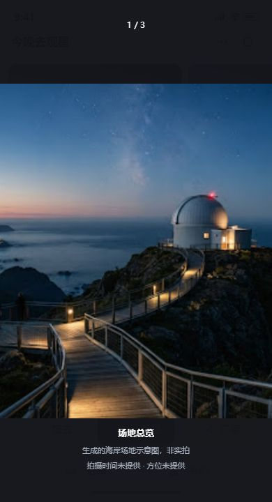

地图底图为原设计示意；这里表达取景与面板关系，不宣称真实比例。实际产品按真实地面范围和 getRegion 验证。
20 km 和曲线仅为设计示例；保留北向俯视图、原章节、固定动作、来源与缺测含义。可编辑组件及四状态见 current.html。

保留与补充
- 复用原照片组和查看器，保留横向浏览、切换、来源和关闭返回。
- 有实际资料时展示拍摄时间、方位和来源；未提供时明确说明。
- 当前参考图仍标注为生成的示意图，不冒充该点现场照片。
- 山体模型只估算地形遮挡；附近树木、围墙和建筑仍依现场资料。
未改动的基本资料、天文、设施卡、固定动作与底栏沿原采用源；这些截图与 HTML 不是生产或手机验收证据。